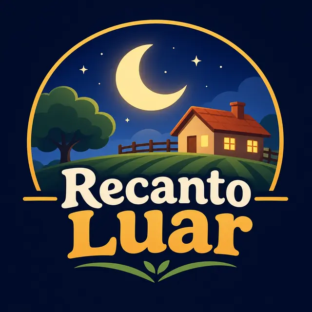
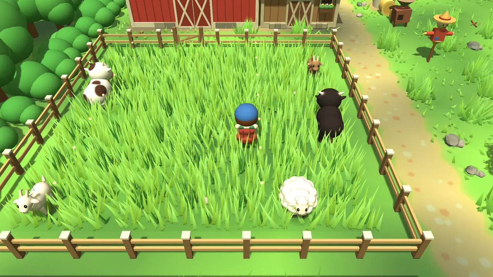

Plante e colha
Mais de vinte culturas que mudam com as estações, estufa, adubo, aspersores e pomar com jabuticaba, manga, goiaba e laranja.

Jogo de fazenda em 3D
Limpe o mato, conserte a casa, are a terra e veja a primeira colheita brotar. Um jogo de fazenda aconchegante, inspirado nos clássicos do gênero e cheio de cultura brasileira.
A primavera inteira é grátis. Depois, um pagamento único libera o jogo completo.

O pasto com a vaca, o boi, a ovelha e a cabraCaptura 1 de 8
Um ano inteiro de estações, com coisas para fazer todo dia e segredos para achar com calma.
Mais de vinte culturas que mudam com as estações, estufa, adubo, aspersores e pomar com jabuticaba, manga, goiaba e laranja.
Vacas, galinhas, ovelhas, cabras, o cavalo Trovão, o cachorro Paçoca e o gato Mingau. Converse, escove, leve ao pasto e veja os corações crescerem.
O carpinteiro Rafa ajuda a reerguer curral, galinheiro, haras e a casa em quatro níveis. Faça cercas, porteiras e conserte a carroça.
Mais de vinte moradores com rotina, aniversário e histórias próprias. Cenas de coração, casamento e família.
Festa Junina com quadrilha e pescaria, Caça aos Ovos, corrida de cavalos e fogos de verão. Mistérios da serra, segredos do folclore e uma mina funda.
Pesca em rio, lago e mar, gelo no inverno, cozinha, brechó, correios, biblioteca e um caderno de campo para completar.
Jogue os 30 primeiros dias sem pagar nada e sem cadastro.
Gostou? Desbloqueie o jogo completo uma vez só e continue a mesma fazenda.
Nada de propaganda e nada de comprar para avançar. Sua fazenda pode ir para a nuvem com o seu e-mail.